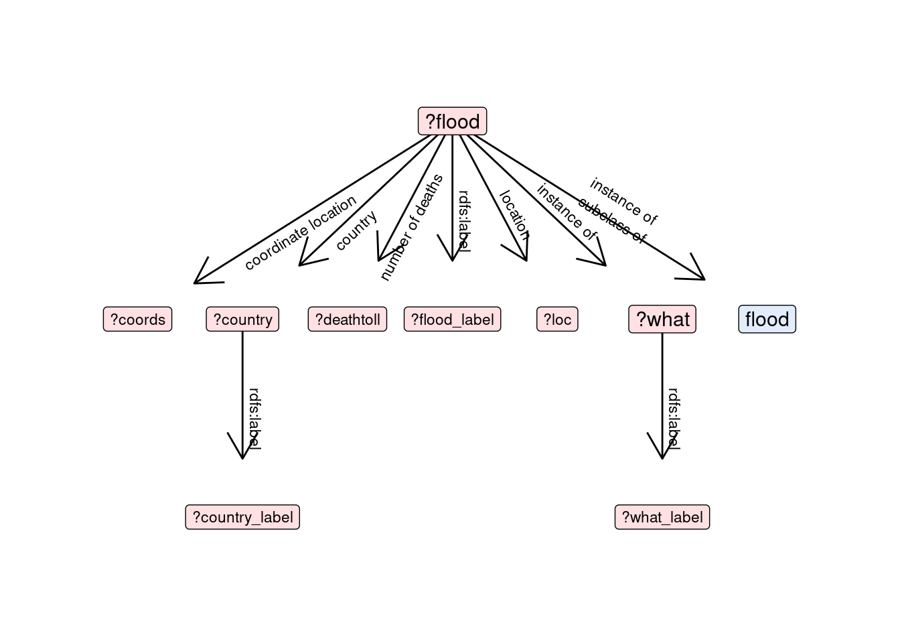

Code
library(glitter)
library(tidyverse)
library(sequins)We query the Wikidata Triplestore through the {glitter} R package (ref).
query=spq_init() %>%
spq_add("?flood wdt:P31/wdt:P279* wd:Q8068") %>%
spq_add("?flood wdt:P31 ?what") %>%
spq_add("?flood wdt:P625 ?coords",.required=FALSE) %>%
spq_add("?flood wdt:P17 ?country",.required=FALSE) %>%
spq_add("?flood wdt:P1120 ?deathtoll",.required=FALSE) %>%
spq_add("?flood wdt:P276 ?loc",.required=FALSE) %>%
spq_label(flood,country,what)
plot_query(query, labelling=TRUE)
# A tibble: 6 × 9
what flood loc deathtoll country country_label flood_label what_label
<chr> <chr> <chr> <dbl> <chr> <chr> <chr> <chr>
1 wd:Q8065 wd:Q146… wd:Q… 85 wd:Q148 People's Rep… 2013 China… natural d…
2 wd:Q8065 wd:Q146… wd:Q… 85 wd:Q148 People's Rep… 2013 China… natural d…
3 wd:Q8065 wd:Q146… wd:Q… 85 wd:Q148 People's Rep… 2013 China… natural d…
4 wd:Q8065 wd:Q146… wd:Q… 85 wd:Q148 People's Rep… 2013 China… natural d…
5 wd:Q8065 wd:Q146… wd:Q… 85 wd:Q148 People's Rep… 2013 China… natural d…
6 wd:Q8065 wd:Q146… wd:Q… 85 wd:Q148 People's Rep… 2013 China… natural d…
# ℹ 1 more variable: coords <chr>This table has 1587 rows and documents 804 flood events.
The degree of precision in the geographical location for each of these floods might vary. For each recorded flood event we might have access to all or part of these informations:
loc) which might refer to a scale as varied as continent/sub-continent, country, basin, city, etc.country)coords)In case location is not provided, we approximate it with country (if available).
Now we try and complete geographical informations based on Wikidata. For each location identifier, we collect data about
get_loc_info=function(loc_id){
result=spq_init() %>%
spq_set(loc=loc_id) %>%
spq_add("?loc wdt:P17 ?country_loc") %>%
spq_add("?loc wdt:P625 ?coords_loc") %>%
spq_add("?loc wdt:P31 ?loc_type") %>%
spq_label(loc, country_loc, loc_type) %>%
spq_select(-loc) %>%
spq_perform(replace_prefixes=TRUE)
result
}We apply this query to all locations mentioned in wd_raw:
We then update the data about floods taking into account that supplementary data about locations.
Get coordinates of countries
We also want to get country coordinates
Now we update the data about floods taking into account that supplementary data about countries:
floodlocs=wd_raw %>%
left_join(locs,by="loc",
relationship ="many-to-many") %>%
mutate(country_label=case_when(country_label==""~country_loc_label,
is.na(country_label)~country_loc_label,
country_label!=""~country_label)) %>%
mutate(country=case_when(is.na(country)~country_loc,
!is.na(country)~country)) %>%
mutate(coords_from=case_when(!is.na(coords)~"flood",
is.na(coords)~"location")) %>%
select(flood,flood_label,coords,coords_loc,country,country_label) %>%
left_join(countries,by="country",
relationship ="many-to-many") %>%
mutate(coords_from=case_when(is.na(coords) & is.na(coords_loc) & !is.na(coords_country) ~"3) country",
!is.na(coords_loc)~"2) location",
!is.na(coords)~"1) direct",
TRUE~"4) no coordinates")) %>%
mutate(coords=case_when(is.na(coords)~coords_loc,
!is.na(coords)~coords)) %>%
mutate(coords=case_when(is.na(coords)~coords_country,
!is.na(coords)~coords)) %>%
unique()The coordinates for the flood events are thus inferred from:
# A tibble: 4 × 2
coords_from n
<chr> <int>
1 1) direct 12
2 2) location 689
3 3) country 28
4 4) no coordinates 81get_date_info=function(flood_id,type="P585"){
result=spq_init() %>%
spq_set(flood=flood_id) %>%
spq_add(glue::glue("?flood p:{type}/psv:{type} ?datestatement")) %>%
spq_add("?datestatement wikibase:timeValue ?datetime") %>%
spq_add("?datestatement wikibase:timePrecision ?precision",.required=FALSE) %>%
spq_mutate(date=as.date(datetime)) %>%
spq_select(-datestatement,-datetime) %>%
spq_perform(replace_prefixes=TRUE)
result
}We apply this query to all locations mentioned in wd_raw:
fill_void=function(tib,name="date"){
if(nrow(tib)==0){
tib=tibble::tibble(flood=NA,
date=NA,
precision=NA)
}
tib=tib %>% select(date, precision)
colnames(tib)=c(name,paste0(name,"_precision"))
return(tib)
}
if(!file.exists("data/dates.RDS")){
dates=wd_raw %>%
select(flood,flood_label)%>%
unique() %>%
mutate(date=purrr::map(flood,get_date_info)) %>%
mutate(start=purrr::map(flood,get_date_info, type="P580")) %>%
mutate(end=purrr::map(flood,get_date_info, type="P582")) %>%
mutate(date=purrr::map(date,fill_void)) %>%
mutate(start=purrr::map(start,fill_void,name="start")) %>%
mutate(end=purrr::map(end,fill_void,name="end")) %>%
tidyr::unnest(c(date,start,end))
saveRDS(dates, "data/dates.RDS")
}There is a certain heterogeneity in the way information about dates is provided. The flood events’ time of occurrence might be provided through the properties
We infer the date of a flood event in that order of priority
dates=readRDS("data/dates.RDS") %>%
filter(date_precision>=9|is.na(date_precision)) %>%
mutate(date=lubridate::ymd(date),
start=lubridate::ymd(start),
end=lubridate::ymd(end)) %>%
mutate(date_from=case_when(!is.na(date)~"direct",
(is.na(date) & !is.na(start) & !is.na(end))~"av_start_end",
(is.na(date) & is.na(end) & !is.na(start))~"start",
(is.na(date) & is.na(start) & !is.na(end))~"end")) %>%
mutate(av_start_end=purrr::map2(start,end,avdate)) %>%
tidyr::unnest(av_start_end) %>%
mutate(date=case_when(!is.na(date)~date,
(is.na(date) & !is.na(start) & !is.na(end))~av_start_end,
(is.na(date) & is.na(end) & !is.na(start))~start,
(is.na(date) & is.na(start) & !is.na(end))~end)) %>%
mutate(date_label=stringr::str_extract(flood_label,"\\d{4}")) %>%
mutate(date_label=case_when(!is.na(date_label)~paste0(date_label,"-01-01"),
TRUE~NA)) %>%
mutate(date_label=case_when(!is.na(date_label)~lubridate::ymd(date_label),
TRUE~NA)) %>%
mutate(date_from=case_when((is.na(date) & !is.na(date_label))~"flood_label",
TRUE~date_from)) %>%
mutate(date_precision=case_when((is.na(date) & !is.na(date_label))~9,
TRUE~date_precision)) %>%
mutate(date=case_when((is.na(date) & !is.na(date_label))~date_label,
TRUE~date)) %>%
select(-av_start_end)# A tibble: 5 × 2
date_from n
<chr> <int>
1 av_start_end 145
2 direct 453
3 flood_label 138
4 start 45
5 <NA> 31Join to dates and remove geological scale events
if(!file.exists("data/wikisites.RDS")){
wikisites=wd %>%
select(flood,flood_label) %>%
unique() %>%
mutate(wikisites=purrr::map(flood,get_wikisites)) %>%
tidyr::unnest(c(wikisites))
saveRDS(wikisites, "data/wikisites.RDS")
}
wikisites=readRDS("data/wikisites.RDS")
wikisites=readRDS("data/wikisites_translated.RDS")wd_events=wd %>%
select(-date,-date_precision) %>%
left_join(dates %>% select(flood,date,date_precision),by=c("flood"),
relationship ="many-to-many") %>%
unique()
wd_full=wd_events %>%
left_join(wikisites,by=c("flood","flood_label"),
relationship ="many-to-many") %>%
left_join(images,by=c("flood","flood_label"),
relationship ="many-to-many") %>%
left_join(categories,by=c("flood","flood_label"),
relationship ="many-to-many")
wd_events=wd_events %>% select(flood,flood_label,date) %>%
mutate(year=lubridate::year(date)) %>%
unique()
saveRDS(wd_full,"data/wd_full.RDS")
saveRDS(wd_events,"data/wd_events.RDS")